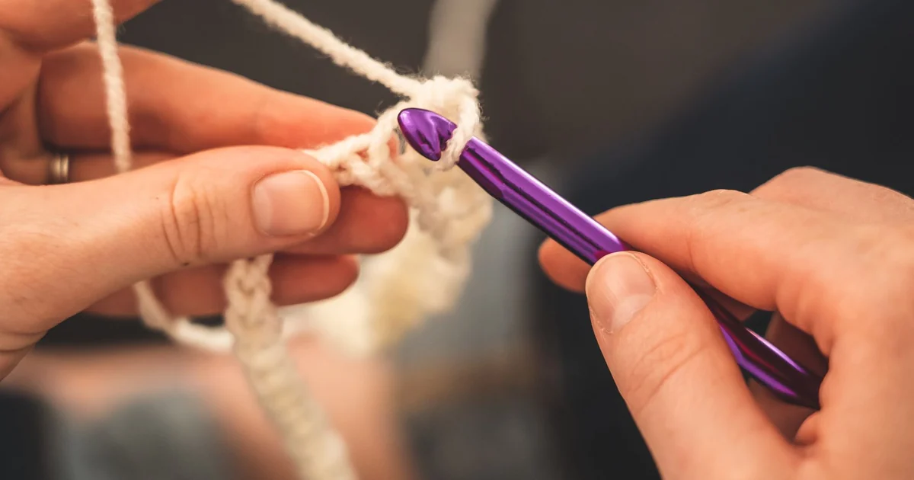
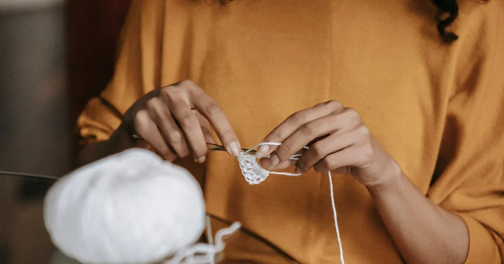
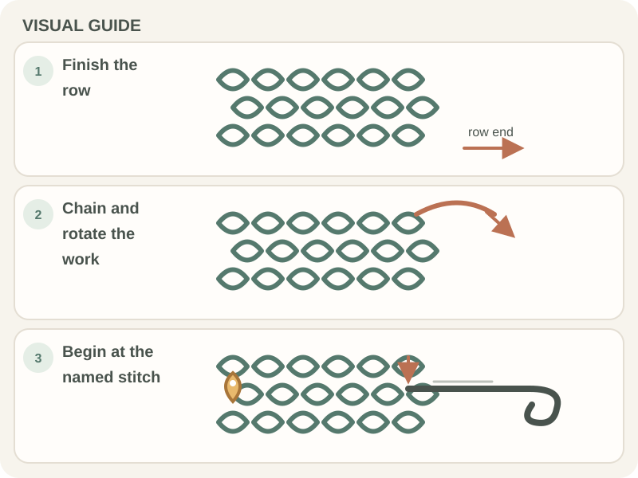

Crochet Basics · Beginner guide
How to Turn Your Work at the End of a Crochet Row
Learn when to make the turning chain, how to turn the fabric, and where the next row begins.

Short answer: At the end of a row, make the turning chain specified by the pattern, rotate the fabric, then work back across the row. “Turn” means rotate the project; it does not mean turn the chain itself.
Before you begin
Finish the last stitch in the row and read the next instruction before moving the hook. A turning chain is one or more chain stitches used to bring the yarn to the height of the next row.
The number of chains and whether they count as a stitch depend on the stitch pattern and designer. Use the number and first-stitch placement given in your pattern.
Step-by-step instructions
- Step 1: Complete the final stitch in the row. Check the pattern’s stitch count and confirm you are at the row edge.

Real crochet photograph by Miriam Alonso via Pexels. - Step 2: Make the turning chain the pattern calls for. Many single-crochet rows use one chain, but the pattern decides both the count and whether it counts as a stitch.
- Step 3: Keep the active loop on the hook and rotate the whole fabric so the row you just made is now facing away from you. The working yarn stays attached.
- Step 4: Begin the next row in the first stitch or space specified by the pattern. Do not work into the turning chain unless its instructions say to.

How to check your work
After a few stitches, the new row should travel back across the fabric rather than continue around the edge. The working yarn should remain at the row end.
Check the first stitch and turning chain against the pattern. Designers vary on whether the turning chain counts, so use the written instruction rather than a general rule.
Common beginner problems
- If the next row continues in the same direction, turn the fabric before making the first stitch.
- If a gap appears at the edge, check whether you skipped the first stitch or worked into a turning chain that should not count.
- If the row count changes, compare the turning-chain rule and first-stitch placement with the previous row.
Setting up a row-turning practice swatch
A small swatch in smooth yarn makes the row edge and turning chain easier to see. Put a removable marker in the first stitch if you lose the edge.
Before turning, check the pattern for the turning-chain count and whether that chain counts as a stitch. Designers may handle the edge differently.
Practice plan
Work a short row, make the specified turning chain, rotate the swatch, and place a marker in the first stitch of the new row. Repeat and check that both edges stay aligned.
Use the counting guide to check the row total and the straight-edge lesson to troubleshoot the corners.
Quick summary
- Finish the row before turning.
- Make the turning chain specified by the pattern.
- Rotate the fabric and follow the pattern’s first-stitch instruction.
Remember: Turning changes the direction of the next row. It does not mean turning the chain stitches themselves.
Frequently asked questions
Do I turn the chain or the whole piece?
Turn the whole piece of crochet fabric. The turning chain stays beside the edge.
How many turning chains should I make?
Use the number in the pattern. It varies by stitch and by designer.
Does the turning chain count as a stitch?
Only if the pattern says it does. This affects where you place the first and last stitches.